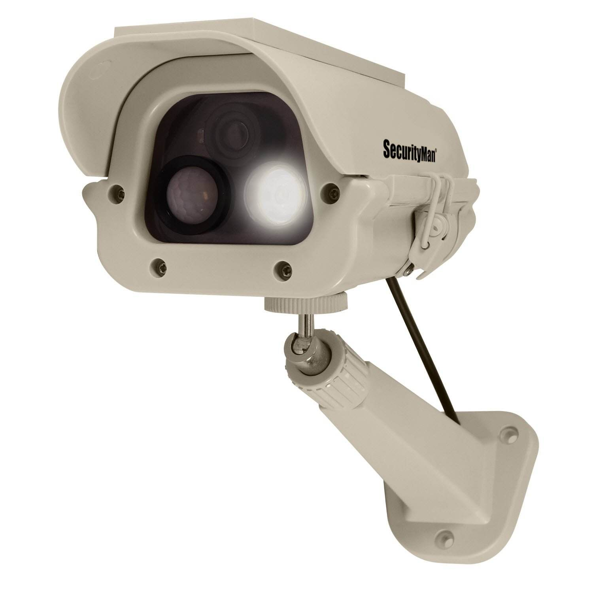

项目实施服务

网络构建服务方案（2019版）
2015年国家提出 “互联网+”行动计划，对于推动产业转型升级、培育发展新兴业态和提供优质公共服务具有重要的战略和现实意义。为贯彻落实创新、协调、绿色、开放、共享的发展理念，通过制度和模式创新，进一步转变电子政务发展方式，根据《国家信息化发展战略纲要》《政务信息资源共享管理暂行办法》的要求，按照“集约高效、共享开放、安全可靠、按需服务”的原则，以“云网合一、云数联动”为构架，建成电子政务云平台，实现政府各部门基础设施共建共用、信息系统整体部署、数据资源汇聚共享、业务应用有效协同，开展政务大数据开发利用，为政府管理和公共服务提供有力支持，提高为民服务水平，提升政府现代治理能力。
- 
网络安全行业解决方案（2019版）
网络安全性问题关系到未来网络应用的深入发展，它涉及安全策略、移动代码、指令保护、密码学、操作系统、软件工程和网络安全管理等内容。一般专用的内部网与公用的互联网的隔离主要使用“防火墙”技术。随着“防火墙”技术的进步，在双家网关的基础上又演化出两种“防火墙”配置，一种是隐蔽主机网关，另一种是隐蔽智能网关(隐蔽子网)。隐蔽主机网关当前也许是一种常见的“防火墙”配置。顾名思义，这种配置一方面将路由器进行隐藏，另一方面在互联网和内部网之间安装堡垒主机。堡垒主机装在内部网上，通过路由器的配置，使该堡垒主机成为内部网与互联网进行通信的唯一系统。目前技术最为复杂而且安全级别最高的”防火墙”当属隐蔽智能网关。所谓隐蔽智能网关是将网关隐藏在公共系统之后，它是互联网用户唯一能见到的系统。所有互联网功能则是经过这个隐藏在公共系统之后的保护软件来进行的。一般来说，这种“防火墙”是最不容易被破坏的。
技术维护服务

电商销售行业技术维护服务
销售服务是指企业在产品销售活动过程中，为顾客提供的各种劳务的总称。企业向顾客销售产品时，总要伴随着一定的劳务付出，这些劳务付出是围绕着为顾客提供方便，满足顾客的需要，使顾客在购买产品前后感到满意而进行的，也是围绕着在顾客当中建立企业信誉，吸引顾客购买，增强企业的竞争能力而进行的。销售服务的根本宗旨就在于：让顾客满意，树立企业形象，促进产品销售。
Online在线维护服务
网络应用系统的管理主要是针对为公司或网吧提供服务的功能服务器的管理。这些服务器主要包括：代理服务器、游戏服务器、文件服务器、ERP服务器、E-MAIL服务器等。要熟悉服务器的硬件和软件配置，并对软件配置进行备份。公司要对ERP进行正常运行管理，防止出错，E-MAIL进行监控，保证公司正常通信业务等，网吧要对游戏软件、音频和视频文件进行时常的更新，以满足用户的要求。